Noctis Labyrinthus
Sources:
Local Geology
USGS Geological map data
From Wikipedia https://en.wikipedia.org/wiki/Ore_resources_on_Mars:
The abundance of volcanic features together with widespread cratering are strong evidence for a variety of ores.
The USGS geological map shows several different regions in the Noctis area:
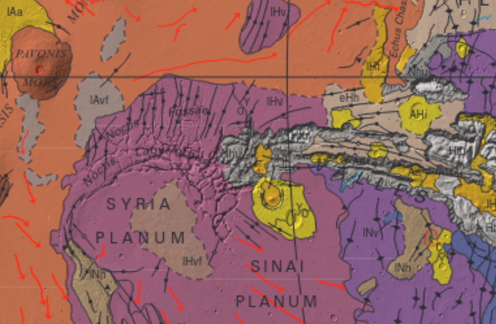
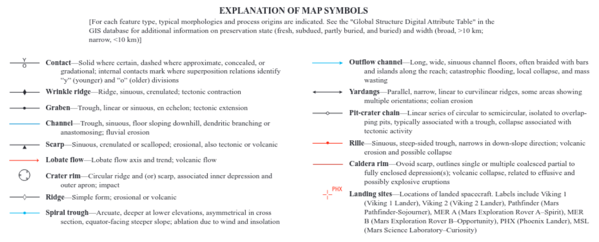
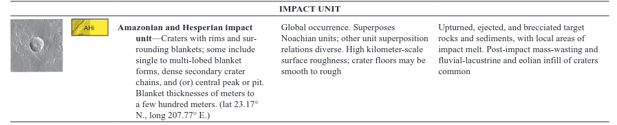
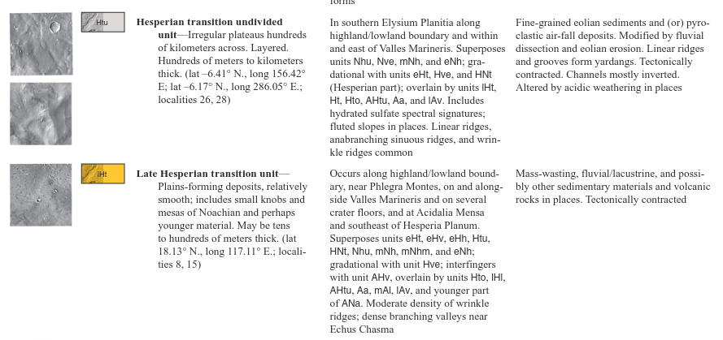
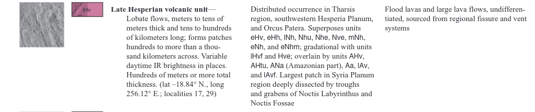
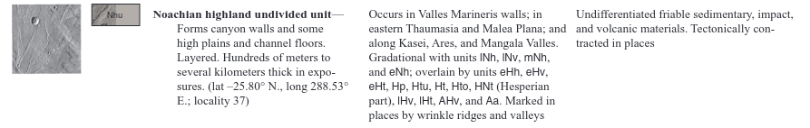
Noctis seems to be a primarily volcanic region, with compression features, graben and other types of folds and cracks due to tectonical stress, a huge crater (Oudemans) with moraines and landslides and smaller craters nearby, plus signs of eolic and fluvial erosion, so probably also some sedimentary rocks. It's not evident whether the region is carsic, but I doubt we currently know which regions were carsic on Mars when (if) surface water was present. The presence of signs of fluvial erosion might be already a good sign.
Regarding the volcanic nature of the region: Wikipedia https://en.wikipedia.org/wiki/Noctis_Labyrinthus quotes "Volcanic rifting at Martian grabens", Mège, Daniel; Cook, Anthony; Garel, Erwan; Lagabrielle, Y http://pure.aber.ac.uk/ws/files/89581/2002JE001852.pdf ( backup )
Noctis Labyrinthus is estimated to have experienced collapses from the drainage of magma chambers up to 5 km below the chasmata floors. In Noctis Labyrinthus in particular, some researchers have speculated that the fracture zone's corridors may connect deeper intrusive structures, forming a plumbing network more akin to the terrestrial Thulean mantle plume, which was responsible for the formation of the North Atlantic Igneous Province. In the chasmata of Noctis Labyrinthus, these pit crater chain collapse zones propagate directionally with a V-shaped tip, and can be used as an indicator of the direction into which magma withdraws from its underlying chamber. These V-tipped morphologies are generally found to propagate away from the center of the Tharsis Rise.
Others have proposed that the chasmata of Noctis Labyrinthus are collapse features of a karstic nature, in which constituent carbonate rock is dissolved by meteoric water that has been acidified by acids originating in volcanic gases. This hypothesis has been challenged because carbonate spectral signatures have not been detected in the Noctis Labyrinthus network.
Wikipedia adds that:
No evidence of fluvial or aeolian erosion is observed in this region.
However, the source is seriously old: Masson, P. (1980), "Contribution to the Structural Interpretation of the Valles Marineris-Noctis Labyrinthus-Claritas Fossae Regions of Mars". https://articles.adsabs.harvard.edu/pdf/1980M%26P....22..211M ( backup )
And later adds that:
An unnamed depression near the southernmost extent of the Noctis Labyrinthus system, near the divide of Syria Planum and Sinai Planum and at the western end of the Valles Marineris (at 10.4°S, 98.6°W) was found to be one of the most mineralogically diverse sites yet observed on the planet. These deposits, dated to the late Hesperian, post-date most Martian deposits of hydrated minerals. Based on CRISM spectral imagery, authors studying this depression have interpretatively identified the presence of:
iron-rich minerals such as hematite and goethite
Polyhydrated iron sulfates (copiapite and coquimbite), monohydrated iron sulfates (szomolnokite and possibly kieserite), hydroxylated iron sulfates (melanterite and hydronium jarosite), and possibly anhydrous iron sulfates (mikasaite).
aluminum phyllosilicates (kaolinites like hydrated halloysite/endeillite, or perhaps a combination of kaolinite and montmorillonite)
iron smectites (nontronite)
opaline silica (opal-A to the diagenetically-altered opal-CT), found to be comparable in spectral signature to some Icelandic volcanic glass lapilli
Of the hydrated iron sulfate minerals observed in the basin, some of them - such as ferricopiapite - are not stable in modern Martian conditions. However, researchers have suggested that they appear to coexist because the different deposits may have been exposed to the open atmosphere at different times, and some of these minerals do only fully dehydrate under Martian conditions over the course of many years. Furthermore, opaline silica deposits observed within this depression display spectra that may occasionally suggest interpersal with the iron sulfate mineral jarosite and the phyllosilicate mineral montmorillonite. The latter material is interpreted as such from an unusual doublet shape resolved on its spectra.
The minerals in this basin were most likely formed as a result of an initially acidic hydrothermal alteration of basaltic terrain, with the dissolution of plagioclase and calcium-rich pyroxenes increasing the pH steadily and causing the other minerals to precipitate. In this basin in particular, the mafic smectite layer overlays sulfates, aluminum phyllosilicate clays, and opaline silica deposits. The order of this layering is unique to the unnamed depression and is typically reversed in most Martian contexts, with the mafic smectites forming the bottom Noachian-age layer. Some researchers have counterproposed that rather than a sequentially reversed depositional event, this basin formed in a single, highly heterogeneous event. This is not necessarily indicative of a global alterational phenomenon, but is most likely tied to a localized heat source such as a volcano or an impact crater.
Calcium-rich pyroxenes have been spectrally observed elsewhere in the northern reaches of the Noctis Labyrinthus fracture zone."
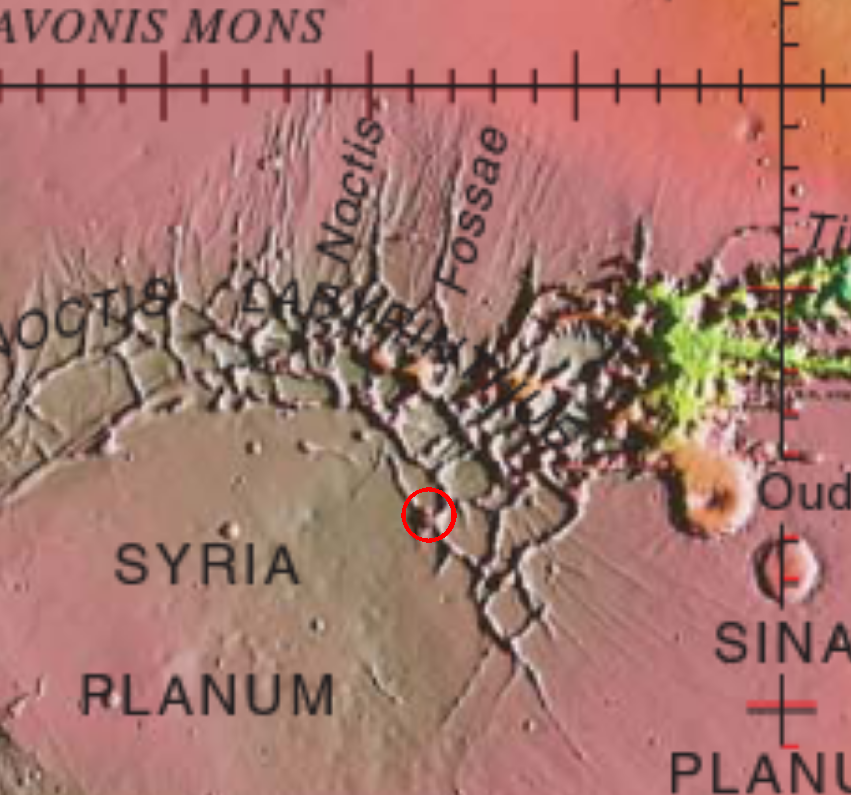
Unnamed depression mentioned in the study: 10.4°S, 98.6°W.
Another reference however is "Most Mars minerals in a nutshell: Various alteration phases formed in a single environment in Noctis Labyrinthus", P. Thollot et al., 21 April 2012 https://agupubs.onlinelibrary.wiley.com/doi/full/10.1029/2011JE004028
This is much more recent that the other study that states that no sign of fluvial or eolic phenomena was found in the area.
Surface features
Lava tubes
See Wikipedia: https://en.wikipedia.org/wiki/Lava_tube
Tharsis and Noctis seems to be full of these features (see Atlas of Mars).
Surface renderings
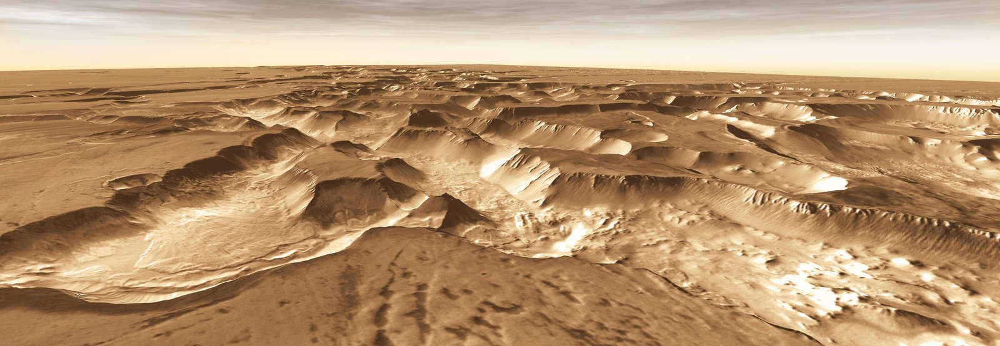
https://photojournal.jpl.nasa.gov/catalog/PIA13655
West of Valles Marineris lies a checkerboard named Noctis Labyrinthus, which formed when the Martian crust stretched and fractured. As faults opened, they released subsurface ice and water, causing the ground to collapse. This westward view combines images taken during the period from April 2003 to September 2005 by the Thermal Emission Imaging System instrument on NASA's Mars Odyssey orbiter. It is part of a special set of images marking the occasion of Odyssey becoming the longest-working Mars spacecraft in history. The pictured location on Mars is 13.3 degrees south latitude, 263.4 degrees east longitude.
From FU Berlin's press release on Noctis: https://www.geo.fu-berlin.de/en/geol/fachrichtungen/planet/press/archiv2016/noctis_labyrinthus1/index.html ( backup )
In many places, the steep valley slopes and the valley floor are covered with extensive landslides. Elsewhere, as can be seen well in these images on closer inspection, the slopes appear to be largely covered by massive wind deposits. The regular linear structures on the valley slopes visible on the left and right edges of the images can be interpreted as dune crests. From the alignment of the crests, it can be deduced that in some places, sand has been transported down the slope, while in other places, uphill transportation of the dune sand has taken place.
In every case, these surface structures created by the wind are no longer active. This is indicated not only by the consistent covering of red Martian dust (active dunes on Mars would be dark grey in appearance as they generally consist of old volcanic dust), but also by the presence of several small impact craters [...] If the dunes are old and have hardened over the course of time, however, meteorites can leave small craters behind.
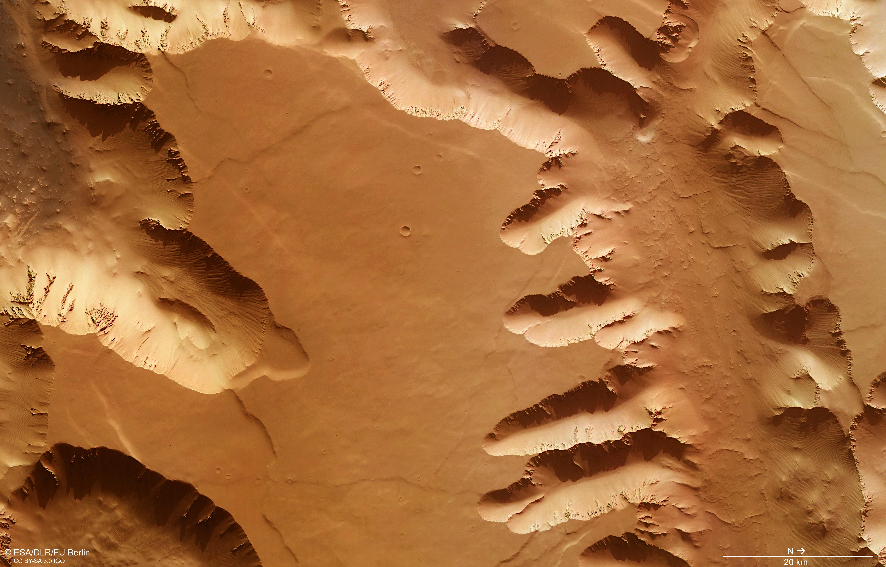
They also released a video here https://www.geo.fu-berlin.de/en/geol/fachrichtungen/planet/presse/animations_rd/2023_NoctisLabyrinthus/index.html ( backup )
This mosaic image is combined with topography information from a digital terrain model (DTM) to generate a three-dimensional landscape. Every second of the movie consists of 50 separate frames that are rendered following a pre-defined camera path in the scene. The opening credits (Mars globe) were created using the Mars global color mosaic (20th anniversary special) with a 3-fold vertical exaggeration. The vertical exaggeration used for the animation “Flight around Noctis Labyrinthus” is 1.5-fold. The haze has been added to conceal the limits of the terrain model. It starts building up at 150-200 km distance.
ESA also created a series of 3D renderings of some locations of Noctis. https://www.esa.int/Science_Exploration/Space_Science/Mars_Express/Noctis_Labyrinthus_labyrinth_of_the_night
The area in question:
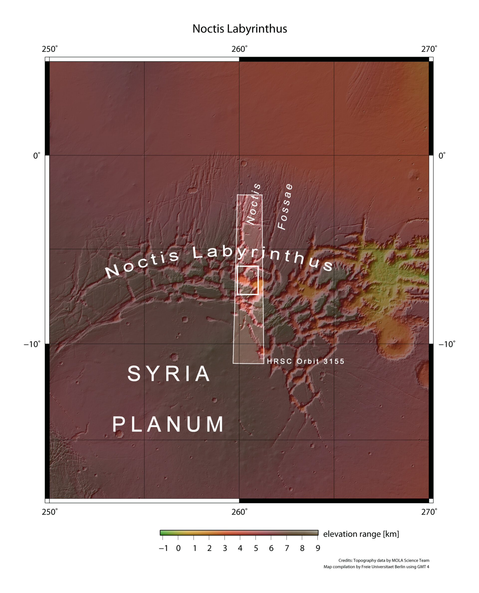
The renderings:
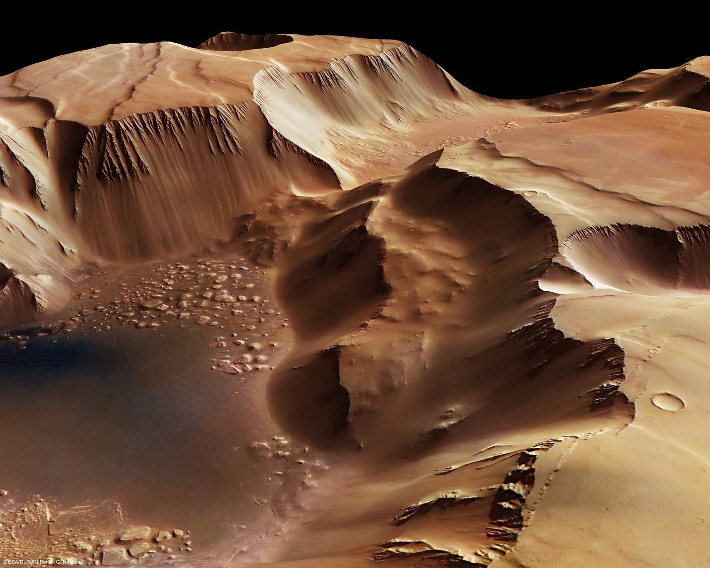
https://www.esa.int/ESA_Multimedia/Images/2007/11/Noctis_Labyrinthus_perspective_view
This perspective view of the Noctis Labyrinthus region, the 'Labyrinth of the Night' on Mars was obtained with data from the High-Resolution Stereo Camera (HRSC), onboard ESA's Mars Express.
The HRSC took these pictures on 25 June 2006 in orbit 3155, with a ground resolution of approximately 16 m/pixel.
This perspective view has been calculated from the digital terrain model derived from the stereo channels.
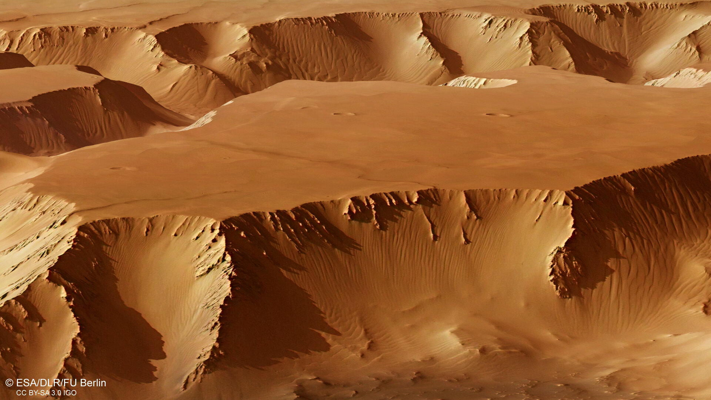
https://www.esa.int/ESA_Multimedia/Images/2016/01/Perspective_view_in_Noctis_Labyrinthus
This perspective view in Noctis Labyrinthus was generated from the main camera's stereo channels on ESA's Mars Express.
It shows the beautiful details of landslides in the steep-sided walls of the flat-topped block in the foreground, and in the valley walls in the background.
The scene is part of region imaged by the High Resolution Stereo Camera on Mars Express on 15 July 2015 during orbit 14632. The image is centred on 6°S / 265°E; the ground resolution is about 16 m per pixel.
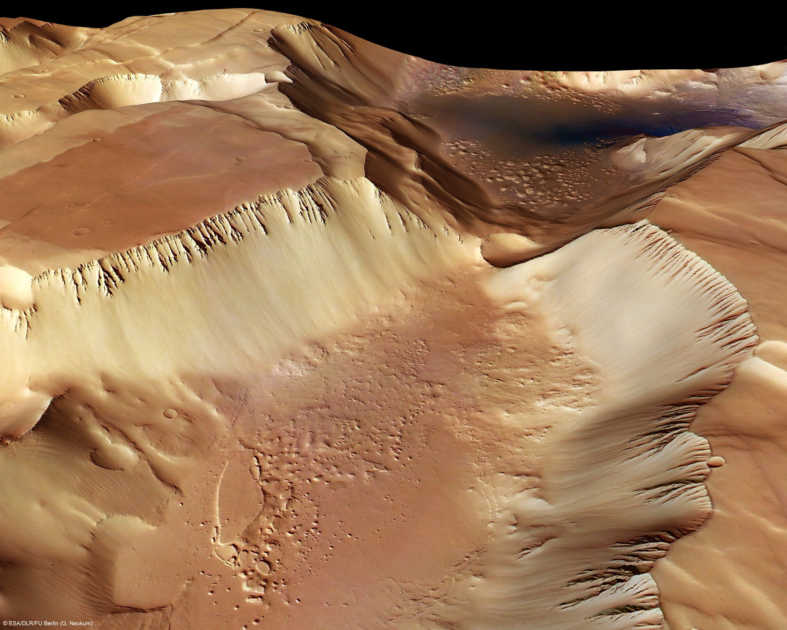
https://www.esa.int/ESA_Multimedia/Images/2007/11/Noctis_Labyrinthus_perspective_view2
This image was taken by the High-Resolution Stereo Camera (HRSC), onboard ESA's Mars Express imaged the Noctis Labyrinthus region, the 'Labyrinth of the Night' on Mars.
The HRSC took these pictures on 25 June 2006 in orbit 3155, with a ground resolution of approximately 16 m/pixel.
This perspective view has been calculated from the digital terrain model derived from the stereo channels.
Graben walls
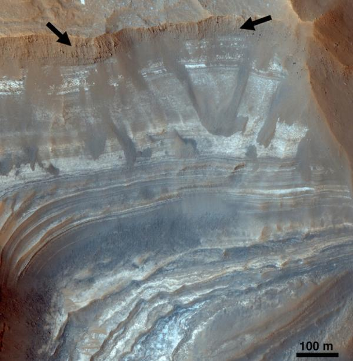
Noctis Labyrintus graben wall. HiRISE, false color. https://web.archive.org/web/20131018010626/https://www.sciencedaily.com/releases/2009/12//091216205910.htm (the current version of this archived page doesn't have this image anymore).
This HiRISE camera false-color image shows dozens of beds within a light-toned deposit located in a trough in the Noctis Labyrinthus region of Mars. CRISM spectra suggest a general sulfate mineralogy for the light-toned deposit. However, the beds differ in brightness, color, thickness, and erosional properties, suggesting that many compositions may be present here but are too thin to be resolved. (Credit: NASA/Jet Propulsion Laboratory/The University of Arizona)
Weitz and her team identified various types of clays, hydrated silicas, and sulfates in these small basins, which are typically 30 to 100 kilometers across. One LTD included dozens of beds of varying thickness, brightness, color and erosional structure, suggesting that significant amounts of water once existed there. In addition, sulfates were mixed with clays within the deposits, indicating that ph levels may have fluctuated between acidic and alkaline conditions.
Another LTD is buried several meters beneath wind-deposited material and is only exposed in the trough's upper walls, indicating it is older than the trough. In still another area, clays are buried beneath younger plains along the trough floor, while in the same trough, but a few kilometers away, there are exposures of hydrated silica and calcium sulfate.
The wide variability in deposits and mineralogy in these and the other basins suggests a complex hydrologic history, including multiple events in some troughs, Weitz said.
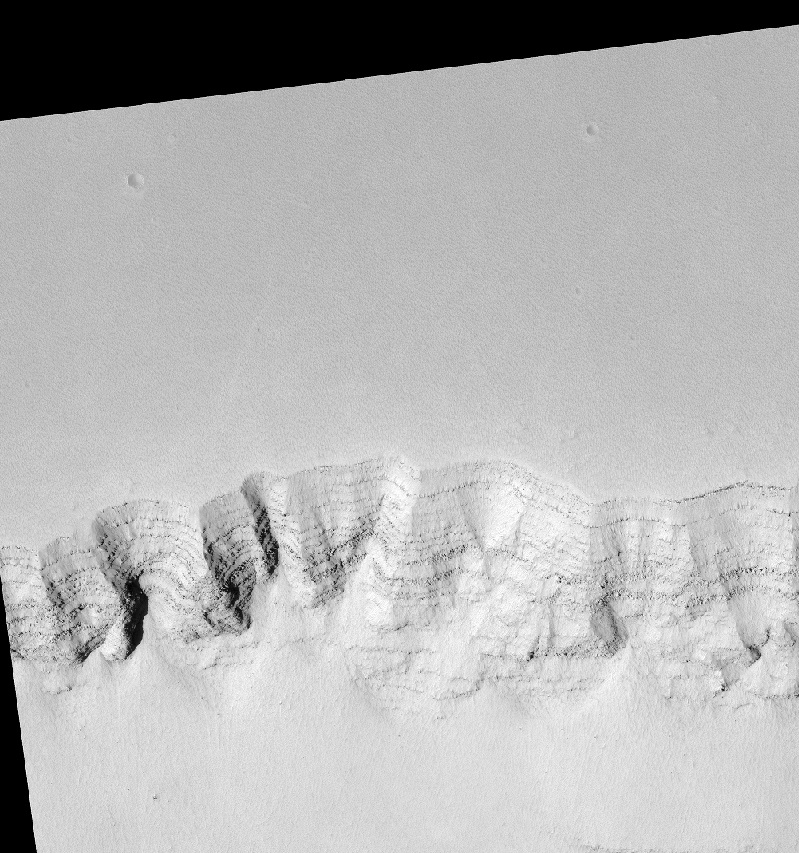
Layers in Noctis Labyrinthus (crop from the original)
https://hirise.lpl.arizona.edu/ESP_049297_1715
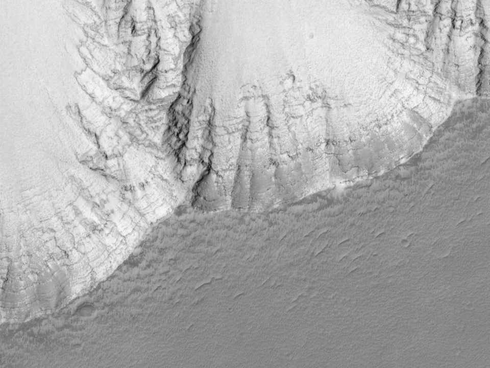
Noctis' Graben, MSSS. Original link lost, photo is from Wikimedia. https://commons.wikimedia.org/wiki/File:Noctis_Labyrinthus.JPG
{kind=link}
Mars Global Surveyor image of close-up of layers in the wall of Noctis Labyrinthus. The picture ID is S18-0288 and the location is 97.17 degrees west longitude and 12.11 degrees south latitude.
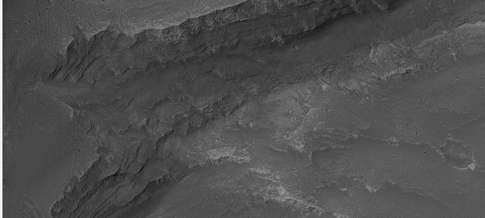
Noctis' Grabens, layers towards the bottom of the depression.
https://hirise.lpl.arizona.edu/ESP_025970_1690 "Sample of Linear Depression Terminating in Cliff in Noctis Labyrinthus"
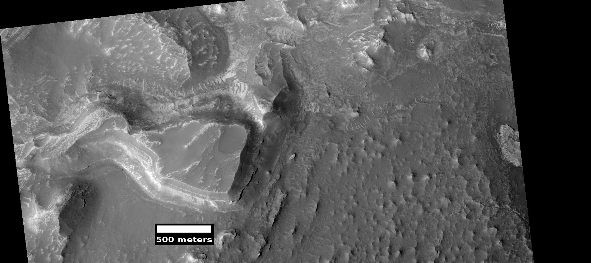
A mesa at the bottom of one of the grabens.
https://hirise.lpl.arizona.edu/ESP_040093_1665
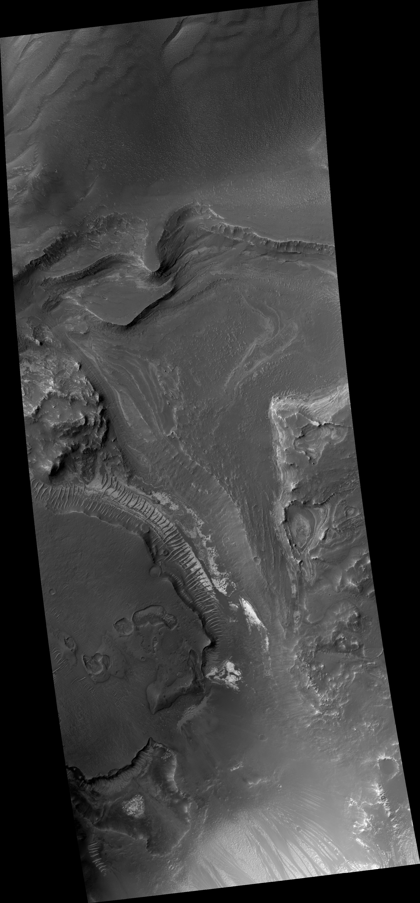
https://hirise.lpl.arizona.edu/ESP_027526_1685
Note the layers on the walls, the raised plateaus, the dunes on the bottom-left side. Dunes are about 200-400m long.

Noctis Labyrinthus Landslides
http://themis.asu.edu/feature/6
Location: -13.3°N, 263.4°E Image Size: 28x39km 1634x2300pixels
This false-color THEMIS mosaic focuses on one junction where canyons meet to form a depression 4 kilometers (13,000 feet) deep. The mosaic combines visible wavelength images made during daytime with nighttime infrared images. The nighttime view records the predawn temperature of the surface. This data can tell scientists about the nature of the materials on the ground. [..] At the foot of the slope, however, lie the traces of older, more substantial avalanches that piled up rocks and large debris. As such rockslides slow their fall and halt, they pile up ramparts that resemble the "toes" seen on the canyon floor. [...]
In the canyon bottom lies a curious deposit whose origin is unclear. Measurements by THEMIS show this material has a temperature of -70° Celsius (-100° Fahrenheit). While this is extremely cold by Earth standards, in martian terms it's comparatively warm, especially in contrast to the dust on the canyon rim, which has a temperature of -115° C (-175° F).
Since the warm deposit lies where many landslide toes meet and merge, it's a good guess the material contains a lot of rocks. Yet this may not tell the complete story. In places, the deposit resembles wind-eroded features called yardangs, seen in many places on Mars.
Yardangs, which also occur in terrestrial desert regions, form as strong winds erode soft sediments. Typically, yardangs show as low, elongated bumps or hills that align with the prevailing wind direction.
Complicating the story is the fact that in the bottom of Valles Marineris and within dozens of martian craters and canyons, scientists see older material laid down in layers and now exposed by erosion. The deposits seen here partly resemble those layered sediments.
So is the warm, rock-rich material in the canyon bottom a mingling of landslide toes? Does it also embody wind-sculpted sediments? Or is this some unknown older material emerging as the canyon walls erode? No one can yet say - and its origin might even combine all these in some way. Stay tuned.
Relic glacier
On the south eastern edge of Noctis Labyrinthus, scientists located what is likely to be a relic glacier, i.e. the remains of what was formerly a glacier.
News article: https://www.universetoday.com/160642/remnants-of-a-relict-glacier-found-near-the-equator-on-mars/ ( backup )
[...] Scientists studying the surface of Mars discovered a relict glacier near the planet’s equator. The relict glacier could signal the presence of buried water ice at the planet’s mid-latitudes.
Some areas of the Martian surface are known for light-toned deposits (LTDs.) NASA’s Viking spacecraft spotted them in the late 1970s. Since then, scientists have found them in Valles Marineris, Hebes Chasma, and in other locations on Mars. Their unusual features have captured the attention of researchers who want to understand how they formed. While LTDs are named for their colour, that’s not the only way they differ. Their surfaces can set them apart from their surroundings, too. The top of LTDs can be rough, in contrast to their smooth-surfaced surroundings.
As scientists have worked to piece together Mars’ geological history, they’ve tried to understand what exactly LTDs are and where they fit in the timeline. In a 2008 paper, researchers presented evidence that some LTDs are vestiges of large-scale spring deposits. Different teams of researchers have examined the LTDs and reached different conclusions. Some concluded that they’re lacustrine deposits, some suggested they’re made of deposits eroded from walls, some thought they’re aeolian deposits, and some even suggested that they’re volcanic deposits. [...]
“What we’ve found is not ice, but a salt deposit with the detailed morphologic features of a glacier. What we think happened here is that salt formed on top of a glacier while preserving the shape of the ice below, down to details like crevasse fields and moraine bands,” said Dr. Lee.
[...] When pyroclastic materials, including ash, pumice, and lava, erupted from volcanoes, they landed on top of the ancient glacier. When they contacted the ice, chemical reactions would’ve occurred that formed a thick layer of sulphate salts like the ones in Mars’ LTDs. The sulphate salts would’ve formed a hardened layer moulded to the surface of the ice. Over long periods of time, the volcanic material covering the glacier eroded. What’s left is the layer of sulphate salts, preserving the form of the original underlying glacier. [...]
Over time, craters have impacted the region, but only lightly. That means the features are geologically young, likely from Mars’ Amazonian Age, the most recent age that also includes modern Mars. [...]
There’s no surface ice here. The ice in the glacier may have all sublimated, or some of it might persist under the sulphate cap. “Water ice is, at present, not stable at the very surface of Mars near the equator at these elevations. So, it’s not surprising that we’re not detecting any water ice at the surface. It is possible that all the glacier’s water ice has sublimated away by now. But there’s also a chance that some of it might still be protected at shallow depth under the sulphate salts,” said Lee.
Actual publication (2023): https://www.researchgate.net/publication/369369563_A_RELICT_GLACIER_NEAR_MARS%27_EQUATOR_EVIDENCE_FOR_RECENT_GLACIATION_AND_VOLCANISM_IN_EASTERN_NOCTIS_LABYRINTHUS ( backup)
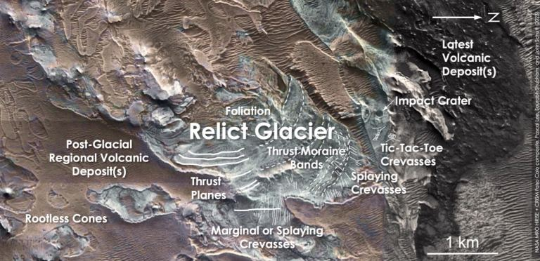
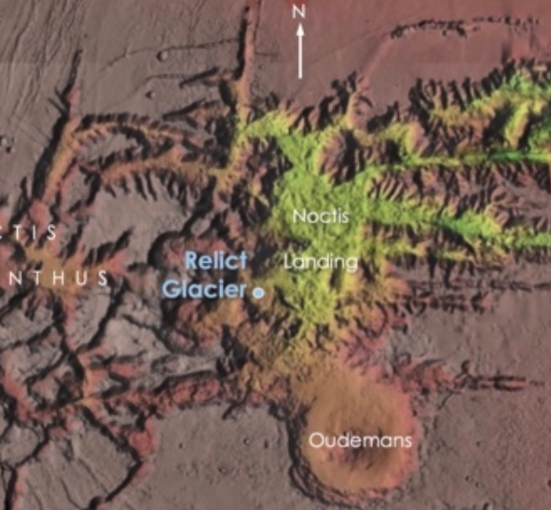
Noctis Landing
The Noctis Landing site is the name given around 2015 to the large depression between Noctis Labyrinthus and Ius Chasma. It has been identified as one possible landing location of the first human landing on Mars. Keep in mind that this is an unofficial name. https://ntrs.nasa.gov/api/citations/20150021128/downloads/20150021128.pdf ( backup )
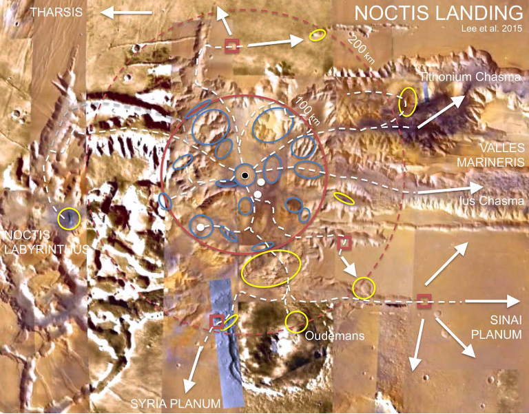
https://www.nasa.gov/sites/default/files/atoms/files/noctislandingez-lee-takehometagged.pdf
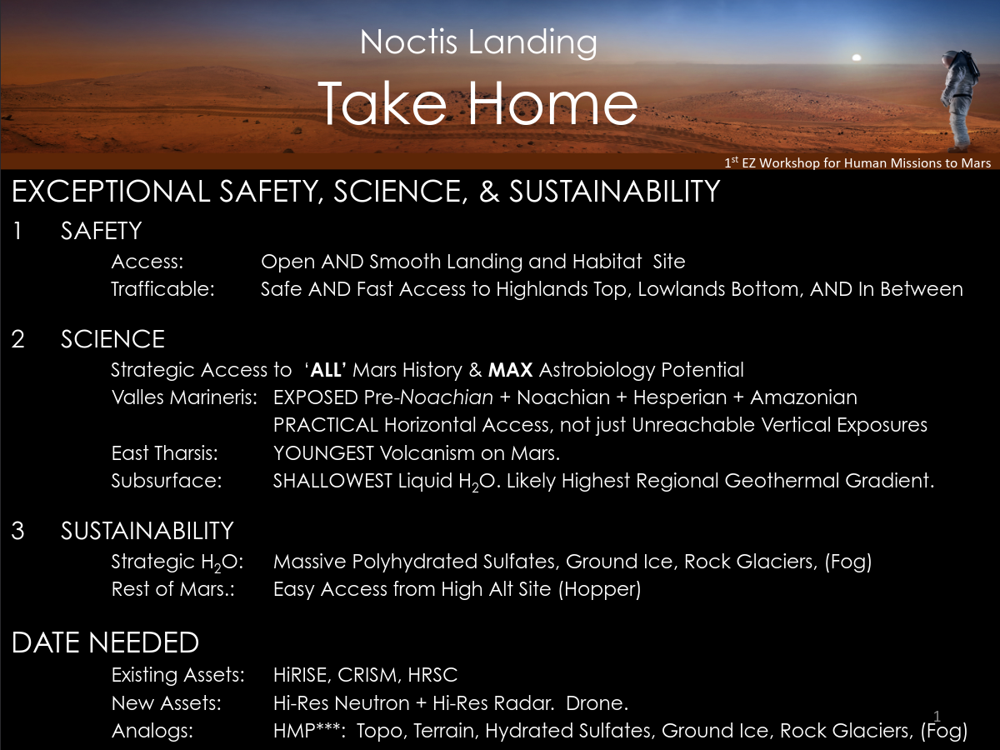